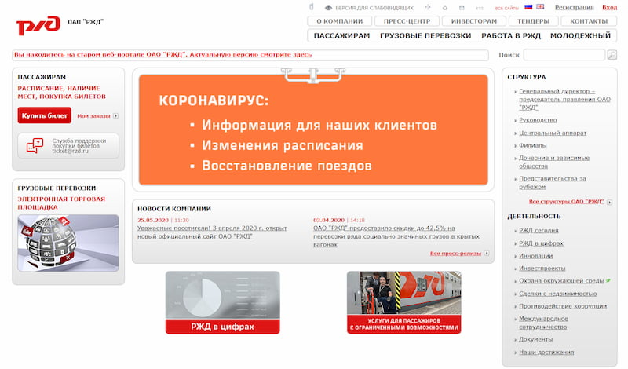
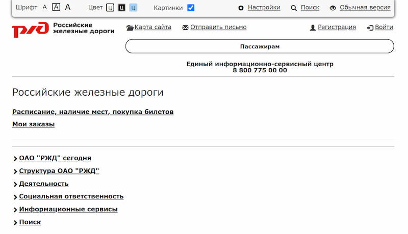
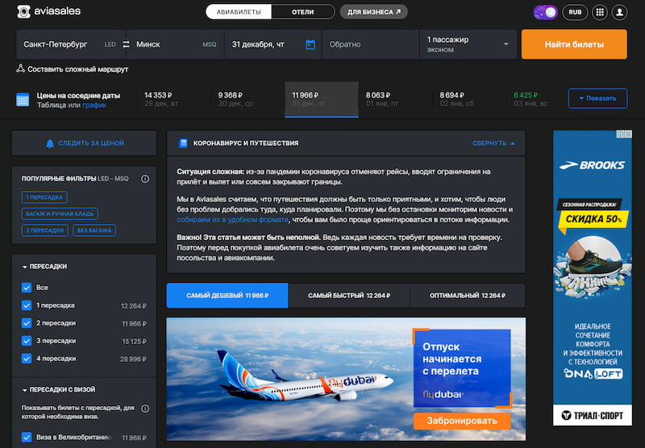

Интернет-ресурсы. Требования доступности для инвалидов по зрению
Введён 01.01.2014
Приказ Минкомсвязи России №483
Об установлении Порядка обеспечения условий доступности для инвалидов по зрению официальных сайтов федеральных органов государственной власти, органов государственной власти субъектов Российской Федерации и органов местного самоуправления в сети «Интернет»
От 30.11.2015
Почему только для слабовидящих?
ГОСТ Р 52872-2019
Интернет-ресурсы и другая информация, представленная в электронно-цифровой форме. Приложения для стационарных и мобильных устройств, иные пользовательские интерфейсы. Требования доступности для людей с инвалидностью и других лиц с ограничениями жизнедеятельности
Введён 01.04.2020. Разработан на основе WCAG 2.0.
Органы государственной власти в технических заданиях на проектирование и разработку интерфейсов своих официальных сайтов предусматривают наличие альтернативных текстовых версий таких сайтов (далее – версия для инвалидов по зрению), переход к которым осуществляется с главной страницы официального сайта в случае, если сам официальный сайт исходно не соответствует требованиям пункта 4 настоящего Порядка
Требования формальным языком
нетекстовая информация и нетекстовые материалы, представленные на официальных сайтах органов государственной власти, должны присутствовать также и в версии для инвалидов по зрению в виде краткого описания такой нетекстовой информации, за исключением нетекстовой информации и нетекстовых материалов, используемых только с целью украшения и визуального оформления официальных сайтов органов государственной власти;
графические файлы формата PDF, содержащие документы в графическом виде, представленные в разделах официальных сайтов органов государственной власти, должны присутствовать также и в версиях для инвалидов по зрению в текстовом формате;
наличие возможности изменения размеров текстовой информации до 200%, шрифта, интервала между буквами (кернинг), а также цветовой схемы;
информация, относящаяся к работам (услугам) для инвалидов по зрению, должна быть представлена на уровне доступности специализированных интернет-ресурсов для инвалидов по зрению.
Перевод на человеческий язык
Подписанные контентные изображения
Доступные PDF-вложения или их текстовые версии
Увеличение размера шрифта до 200%
Изменение расстояния между буквами
Изменение цветовой схемы
И зачем тогда отдельная версия?
На что обратить внимание
Какими инструментами пользуются слабовидящие?
Каким образом они просматривают сайты?
Нужна ли слабовидящим отдельная версия?
Какие инструменты нужны слабовидящему
Скрин-зум
Экранная лупа
Тёмная тема
Для незрячих — скринридер
Скрин-зум
Экранная лупа
Тёмная тема и режим высокой контрастности
Cкринридеры
Windows:
JAWS
NVDA
MacOS:
VoiceOver
Нейропатия Лебера
Зрение здорового человекаЗрение курильщика человека с нейропатией Лебера
Сайт РЖД

Обычная версия

Версия для слабовидящих
Сайт Aviasales
Светлая тема

Тёмная тема
Нет оформления=Нет информации
Вместо инклюзивности—дискриминация
Версиями для слабовидящих я не пользуюсь. Открываю — из любопытства и чтобы посмеяться. И переключаюсь обратно.
Дмитрий Глюз
Почему ВДС — это плохая идея?
Это не универсальное решение, т.к. существуют разные виды нарушений зрения
Вместо инклюзивности — дискриминация
За слабовидящего уже кто-то решил, что ему видеть, а что — нет
Дополнительные затраты на дизайн, разработку, тестирование, поддержку
По закону будет достаточно доступного основного сайта
Слабовидящие всё равно не пользуются отдельными версиями